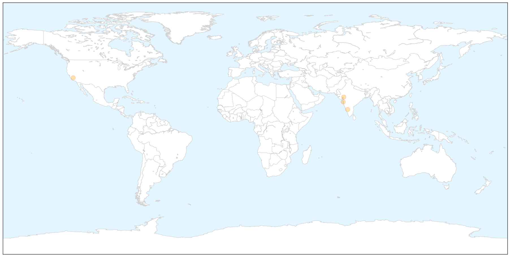
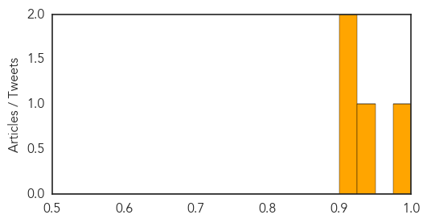
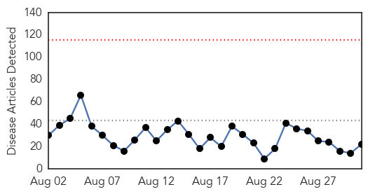
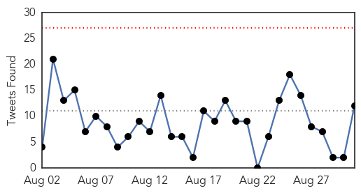
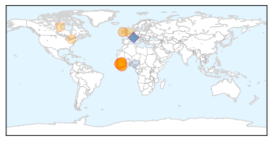

Swine Flu
30-Day Web Trend
0 alerts, 0 warnings

30-Day Twitter Trend
1 alerts, 0 warnings

Article Locations

X

Article Confidences
Top Articles:
Top Tweets:
-
No tweets found for Aug 31, 2015
Ebola
30-Day Web Trend
0 alerts, 0 warnings

30-Day Twitter Trend
0 alerts, 0 warnings

Article Locations
Article Confidences

Top Articles:
- 1.000
- Experts to Investigate Fresh Case of Ebola In Sierra Leone
- 1.000
- Sierra Leone Confirms New Ebola Death
- 0.999
- Confirmation Of Ebola In Woman Who Died In Sierra Leone A Setback In Efforts To Declare Country Ebola-Free : LIFE : Tech Times
- 0.998
- How has Ebola psychologically affected Sierra Leone?
- 0.998
- Sierra Leone: Officials confirm new Ebola death
- 0.995
- Experts to investigate new Ebola case in north Sierra Leone
- 0.990
- Money Questions Swirl as Liberia Ebola Outbreak Nears End
- 0.982
- Liberia Completes 37 Days of Countdown to Ebola Free Status
- 0.982
- Ebola nurse working at NHS hospital that saved his life
- 0.979
- Emory Eye Center team makes second trip to West Africa in 'Quiet Eye' project
- 0.978
- Emory Eye Center team makes second trip to West Africa in 'Quiet Eye' project
- 0.977
- In battling an epidemic, be armed with vaccine
- 0.976
- Experts to research New Ebola Situation in North Sierra Leone – New You are able to Occasions
- 0.956
- Experts to research new Ebola situation in north Sierra Leone
- 0.919
- The Need for Global Health Education in Medical Training
- 0.910
- Suffolk Ebola victim Will Pooley now working for London hospital which saved his life
- 0.894
- LIBERIA: Foreign Ministry Appeals For Diplomats’ Role In Ebola Fight
- 0.777
- Children back to school with continued Hygiene Safety
- 0.721
- Sierra Leone News: As countdown to 42 zero infection continues… Schools re-open in Sierra Leone today « Awoko Newspaper
- 0.688
- Congratulations to our government and people of Sierra Leone
- 0.599
- First Escapes Ebola, Then Fights It
- 0.542
- LIBERIA: Sinoe Closes Border For 72 Hours
Top Tweets:
- 0.851
- Interim results published last July show that this experimental Ebola vaccine is highly effective against the disease
- 0.836
- Sierra Leone Reports Ebola Death - New York Times http://t.co/aUabHdA9Y3 ebola EVD
- 0.814
- WHO & partners trained 18 Sierra Leonean health care workers on implementation of the Ebola ring vaccination trial protocol
- 0.768
- Contacts = ppl known to have come into contact w/ a person confirmed to have been infected with Ebola (i.e. a positive case)
- 0.762
- Money Questions Swirl as Liberia's Ebola Outbreak Nears End - Voice of America http://t.co/4NiBhO31co ebola EVD
- 0.741
- A team of experts has travelled from Guinea to join a large WHO & Min of Health in Kambia where a new Ebola case has been reported
- 0.729
- Experts to Investigate New Ebola Case in North Sierra Leone - New York Times http://t.co/lcURfH8lVE ebola EVD
- 0.669
- RT: A team of experts has travelled from Guinea to join a large WHO & Min of Health in Kambia where a new Ebola case has been repor…
- 0.627
- .@WHO infection control specialist says knowledge & hygiene are crucial 2 keep people safe & prevent spread of Ebola http://t.co/11IeKWnCn5
- 0.600
- Nurses want Buhari to honour colleagues killed by Ebola - DailyPost Nigeria http://t.co/XHAIHpOdf2 ebola EVD
- 0.520
- Ebola nurse Will Pooley pays tribute to African colleague - BBC News http://t.co/6fPOOC1UUv ebola EVD
- 0.515
- School board praises James for handling Ebola hiring the right people and ... - Akron Beacon Journal http://t.co/2LXIlFe0aA ebola EVD